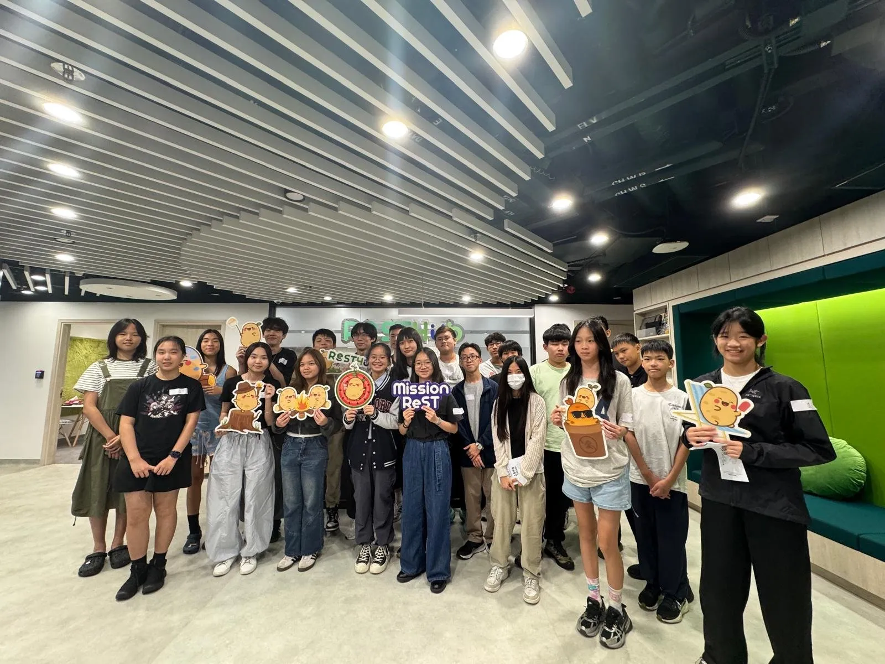
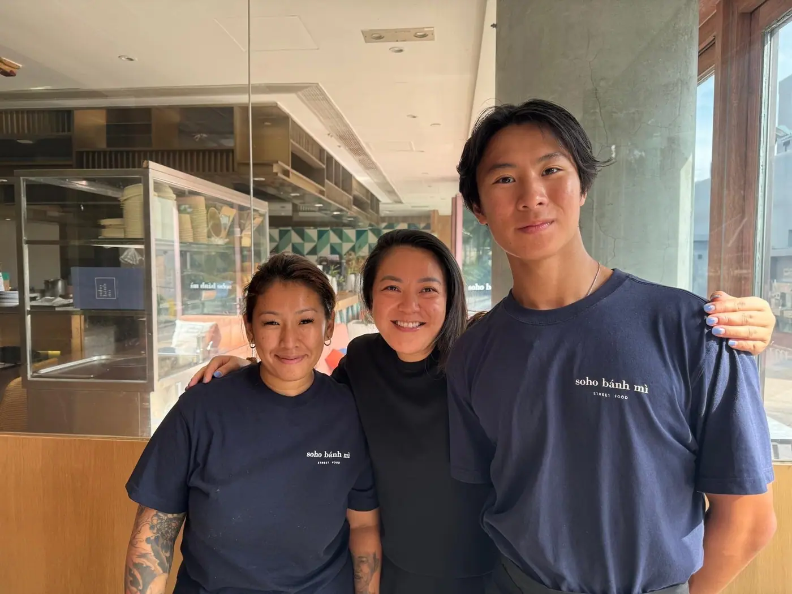

Exclusive Events
Connect with industry leaders, professors, and fellow alumni through private gatherings and speaker sessions.
 Invent Your Own Future
Invent Your Own Future
IYOF initiative · Continuity
The Invent Your Own Future Alumni Network connects passionate young innovators who have taken part in our summer programs, workshops, and initiatives.
Join the alumni mailing list
As part of this exclusive community, alumni gain access to invite-only events, personalized mentorship, and priority internship opportunities with leading partners in technology, science, and social impact.
Connect with industry leaders, professors, and fellow alumni through private gatherings and speaker sessions.

Receive ongoing guidance from university mentors and professionals to accelerate your academic and project growth.

Get early access and priority placement for internships with our partner organizations and research labs.
Join a growing network of global changemakers and stay at the forefront of innovation long after your program ends.
Email us for news and updates. Tell us your name and which IYOF event you attended.
enquiry@inventyourownfuture.org